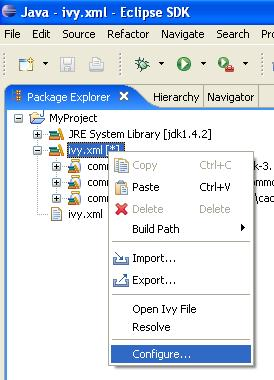
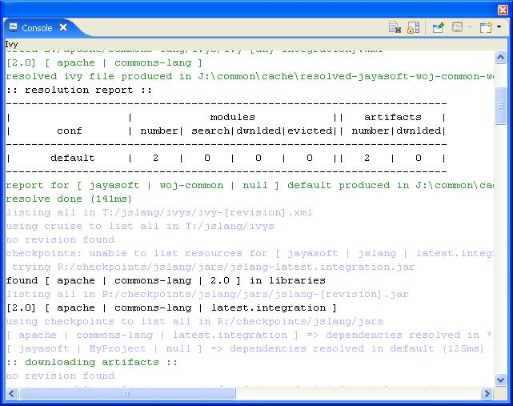

You are fed up with updating the class path of all your projects each time you add or remove one dependency!<br/> <a href="index.html">IvyDE</a> will help you ! Better ... it will work for you!<br/> Indeed, <a href="index.html">IvyDE</a> can manage for you all your dependencies, based on a dependencies descriptor file (like Ivy xml file) it will provide a class path container for your IDE.<br/> <div style="padding:20px;"> <table> <tr> <td><a href="maven.html"></a></td> <td> </td> <td>Obviously IvyDe class path container can be based on a <b>Ivy xml</b> file, <br/>but it also manages <a href="maven.html">Maven Pom !!!</a></td> </tr> </table> </div> <h1>Content</h1> <ul> <li><a href="#start">Start with IvyDE</a></li> <li><a href="#inlife">IvyDE in Project Life</a></li> <li><a href="#console">Ivy Console</a></li> <li><a href="maven.html">Using IvyDE with a maven pom ...</a></li> </ul> <h1><a name="start">Start with IvyDE</a></h1> You've just installed the IvyDE plugin from our <a href="download.html">updatesite</a>, and now you want to enjoy it quickly!<br/> Nothing easier, just follow these steps: <ul> <li>Ensure the ivyconf URL is set in your <a href="index.html#project_pref">project properties</a> or <a href="index.html#pref">eclipse preferences</a>.<br/><br/></li> <li>Ensure the ivy xml file or <a href="maven.html">maven pom</a> can be accessed under the project folder of your eclipse "Navigator" view.<br/><br/></li> <li>Open the "Add Library" form of eclipse (In pachage Explorer, in popup menu of your project choose : [Build Path]/[Add Libraries]).<br/><br/><center><img src="images/build_path_menu.jpg"/></center><br/><br/></li> <li>Select "IvyDE Managed Dependencies" item.<br/><br/><center><img src="images/add_lib.jpg"/></center><br/><br/></li> <li>Select an Ivy xml file or a <a href="maven.html">maven pom</a> and configurations.<br/><br/><center><img src="images/ivy_file_def.jpg"/></center></li> </ul><br/> Your class path is set and you can see all dependencies in one unique folder of package explorer (folder name = <ivy file name>[<configuration>]).<br/><br/> <center> <img src="images/cp_node.jpg"> </center> <h1><a name="inlife">IvyDE in project life</a></h1> <h2>Configure Ivy file and configuration</h2> During life of your project you can change the ivy xml file or <a href="maven.html">maven pom</a> and change the configuration you want to use.<br/> These properties can be accessed by contextual menu of class path container. <br/><br/> <center></center> <br/> <h2>Resolve dependencies</h2> You can explicitly command a dependencies resolution from your class path container. <br/>This command will invoke the "resolve" ivy task and update your class path container. <br/><br/> <center><img src="images/cp_resolve.jpg"></center> <h1><a name="console">The Ivy Console</a></h1> The Ivy console provide you all the Ivy working traces that you were used to see in<br/> your command console. This view will be really usefull to understand what Ivy and IvyDE<br/> are performing for you.<br/> The Ivy Console can be access by your eclipse Console view, selecting the "Ivy Console" item.<br/> <br/> <center><img src="images/ivy_console_selection.jpg"></center><br/> <br/> <center></center><br/>